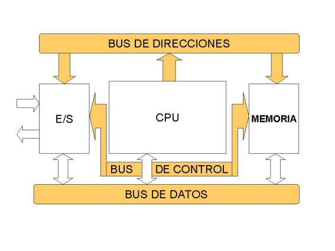
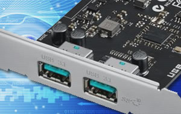
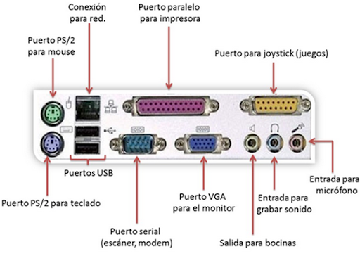
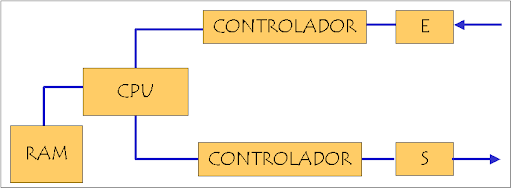
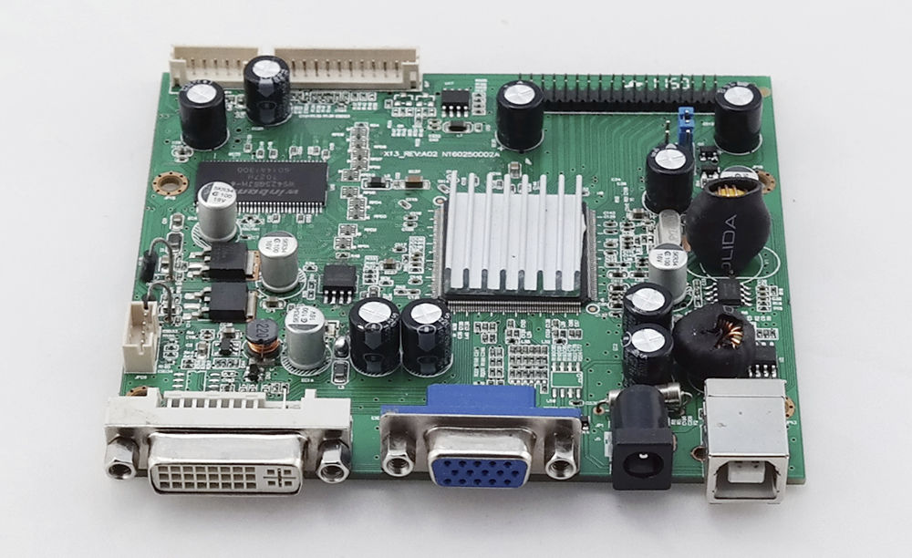

El chipset es un conjunto de circuitos integrados diseñados en base a la arquitectura de un procesador.
Su función principal es permitir que los procesadores funcionen en una placa base y actuar como puente de
comunicación entre los componentes de la placa.
Funcionamiento:
El chipset permite que la placa base funcione como el eje del sistema.
Proporciona soporte a varios componentes y facilita la comunicación entre ellos mediante buses.
En los computadores PC, sigue un esquema de arquitectura abierta para modularidad y estándares.

La unidad central de procesamiento (CPU) es el componente fundamental dentro de
una computadora u otros dispositivos programables.
Función de la CPU:
- La CPU interpreta las instrucciones de un programa informático.
- Realiza operaciones básicas aritméticas y lógicas.
- También maneja operaciones externas provenientes de la unidad de entrada/salida.
Componentes de la CPU:
1. Unidad Aritmético-Lógica (ALU):
- Realiza operaciones matemáticas (suma, resta, multiplicación, etc.) y operaciones lógicas (AND, OR, NOT).
2. Unidad de Control (CU):
- Dirige el flujo de información entre los registros de la CPU y conecta las instrucciones
extraídas de la memoria con la ALU.
3. Registros Internos:
- No accesibles: Registros de instrucción, bus de datos y bus de dirección.
- Accesibles: Registros de uso específico (contador de programa, puntero de pila, acumulador, flags) o de uso general
El controlador del bus se encarga de la frecuencia de funcionamiento y las señales de sincronismo, temporización y control. Está ubicado en un chip en la placa base. El bus es la vía a través de la que se van a transmitir y recibir todas las comunicaciones, tanto internas como externas, del sistema informático. El bus es solamente un dispositivo de transferencia de información entre los componentes conectados a él, no almacena información alguna en ningún momento. Los datos, en forma de señal eléctrica, sólo permanecen en el bus el tiempo que necesitan en recorrer la distancia entre los dos componentes implicados en la transferencia.
Los puertos de entrada/salida (E/S) son puntos de conexión que actúan como interfaz entre una computadora y dispositivos externos, como mouse, impresoras, módems, etc.

1. Puerto Serial:
Transmite datos secuencialmente, un bit a la vez.
- Suelen ser conectores macho de 9 o 25 pines.
- También se conocen como puertos COM o puertos RS323C.
2.Puerto USB (Universal Serial Bus):
- Estándar de la industria para la conexión de datos digitales de corta distancia.
- Permite conectar dispositivos como impresoras, cámaras, teclados, altavoces, etc.
3.Puerto PS/2 (Personal System/2):
- Conecta el mouse y el teclado a las computadoras personales.
- Aunque está casi obsoleto, algunos sistemas compatibles con IBM aún lo tienen.
4. Puerto de Infrarrojos:
- Permite el intercambio inalámbrico de datos en un radio de 10 metros.
- Dos dispositivos con puertos infrarrojos se colocan frente a frente
para compartir datos.
5.Puerto Bluetooth:
- Facilita la conexión inalámbrica entre teléfonos, computadoras y otros dispositivos digitales a corta distancia.
6.Puerto FireWire (IEEE 1394):
- Estándar de interfaz de Apple para comunicación de alta velocidad mediante bus serie.
- Se utiliza principalmente para dispositivos de audio y video, como videocámaras digitales.

El controlador de interrupciones es un módulo que gestiona
las interrupciones de entrada/salida para el procesador.
Función del Controlador de Interrupciones:
- Administra las señales de interrupción procedentes de dispositivos.
- Permite gestionar un número ilimitado de señales de interrupción, favoreciendo la expansión del sistema de entrada/salida.
Ciclo de Reconocimiento de Interrupción:
1. Tras la activación de una línea de interrupción (IR), el controlador activa la salida INTR para señalar a la CPU la existencia de una interrupción activada.
2. Al recibir la señal, el procesador emite un pulso en su salida INTA, indicando que comienza un ciclo de reconocimiento de interrupción.
3. El controlador, al recibir el pulso por su entrada INTA, arbitra las interrupciones y selecciona la más prioritaria.
4. Se emite un segundo pulso por la línea INTA del procesador (o controlador de bus), y el controlador deposita en el bus el vector correspondiente a la interrupción de mayor prioridad.
5. El procesador obtiene la dirección de la rutina de interrupción a partir de este dato y salta a ella. Almacena el registro de flags y la dirección de retorno, deshabilita las interrupciones y comienza a ejecutar la rutina.
El mecanismo de acceso directo a memoria está controlado por un chip específico, el DMAC ("DMA Controller"),
que permite realizar estos intercambios sin apenas intervención del procesador.
En los XT estaba integrado en un chip 8237A que proporcionaba 4 canales de 8 bits (puede mover solo 1 Byte cada vez);
sus direcciones de puerto son 000–00Fh.
Posteriormente en los AT se instalaron dos de estos integrados y las correspondientes líneas auxiliares en el bus de control.
En contra de lo que podría parecer, el resultado no fue disponer de 8 canales, porque el segundo controlador se colgó en “Cascada” de la línea 4 del primero.
Los canales del segundo DMAC está asignado a las direcciones 0C0–0DFh y son de 16 bits.
Pueden mover 2 Bytes (de posiciones contiguas) cada vez.
Cada canal tiene asignada una prioridad para el caso de recibirse simultáneamente varias peticiones (los números más bajos tienen prioridad más alta).
Pueden ser utilizados por cualquier dispositivo que los necesite (suponiendo naturalmente que esté diseñado para soportar este modo de operación).
Cada sistema los asigna de forma arbitraria, pero hay algunos cuya asignación es estándar.

El circuito electrónico que más se utiliza tanto en la industria como en circuitería comercial,
es el circuito temporizador o de retardo, dentro de la categoría de temporizadores,
cabe destacar el más económico y también menos preciso consistente en una resistencia y un condensador,
a partir de aquí se puede contar con un sinfín de opciones.
Un temporizador básicamente consiste en un elemento que se activa o desactiva después de un tiempo preestablecido.
De esta manera podemos determinar el parámetro relacionado con el tiempo que ha de transcurrir para que el circuito
susceptible de temporizarse, se detenga o empiece a funcionar o simplemente cierre un contacto o lo abra.
Se encuentra en la placa base de la PC y que es capaz de mantener una cuenta de tiempo basada en el reloj de la computadora.
Puede usarse para calcular el intervalo entre dos mediciones de tiempo o para generar pausas. Este chip tiene la capacidad de realizar diferentes funciones de conteo.
Es útil para medir el tiempo que dura cierto proceso o para mantener actualizadas la hora del día y la fecha si se deja la PC conectada y encendida.
Es una red secuencial que acepta un código que define la operación que se va a ejecutar y luego prosigue a través de una secuencia de estados, generando una correspondiente secuencia de señales control.
Estas señales de control incluyen el control de lectura-escritura y señales de dirección de memoria válida en el bus de control del sistema.
Otras señales generadas por el controlador se conectan a la ALU y a los registros internos del procesador para regular el flujo de información en el procesador
y desde los buses de dirección y de datos del sistema.
La tarjeta de video, (también llamada controlador de video), es un componente electrónico requerido para generar una señal de video que se manda a una pantalla de video por medio de un cable.
La tarjeta de video se encuentra normalmente en la placa de sistema de la computadora o en una placa de expansión. La tarjeta gráfica reúne toda la información que debe visualizarse en pantalla y actúa como interfaz entre el procesador y el monitor;
la información es enviada a éste por la placa luego de haberla recibido a través del sistema de buses.
Una tarjeta gráfica se compone, básicamente, de un controlador de video, de la memoria de pantalla o RAM video, y el generador de caracteres,
y en la actualidad también poseen un acelerador de gráficos. El controlador de video va leyendo a intervalos la información almacenada en la RAM video y la transfiere al monitor en forma de señal de video; el número de veces por segundo que el contenido de la RAM video es leído y transmitido al monitor en forma de señal de video se conoce como frecuencia de refresco de la pantalla.

En informática, un periférico de entrada/salida o E/S (en inglés: input/output o I/O) es aquel tipo de dispositivo periférico de un computador capaz de interactuar con los elementos externos a ese sistema de forma bidireccional, es decir, que permite tanto que sea ingresada información desde un sistema externo, como emitir información a partir de ese sistema. Los Dispositivos Periféricos de entrada son todos aquellos dispositivos que permiten introducir datos o información en una computadora para que esta los procese u ordene.
Funciones:
Un periférico de E/S es el que se utiliza para ingresar (E) datos a la computadora, y luego de ser procesados por la unidad central de procesamiento (CPU), genera la salida (S) de información. Su función es leer o grabar, permanente o virtualmente, todo aquello que se haga con la computadora, para que pueda ser utilizado por los usuarios u otros sistemas.
Tipos:
Dispositivos o periféricos de comunicación entre computadoras, tales como módems y tarjetas de red, por lo general sirven para entrada y salida. También, los dispositivos de almacenamiento de datos, como los discos rígidos, la unidad de estado sólido, las memorias flash, las disqueteras, entre otros, se pueden considerar periféricos de entrada/salida.
Conforme la tecnología avanza, más datos se van generando, por lo que es necesario contar con un almacenamiento eficiente para poder guardar toda esa información y acceder a ellos. El almacenamiento de datos ha cambiado mucho, desde los sistemas de disco, que muy probablemente se sigan utilizando, pero de una forma más digital: hoy se encuentran conectados a una red y son definidos por un software.
El almacenamiento de datos tiene un proceso a través del uso de la tecnología, ésta se aplica para organizar, distribuir y archivar información con los bytes y los bits que son parte de los sistemas de los que la gente depende día con día, llega a ser tan importante en todos los servicios: desde una simple aplicación, contenido multimedia, direcciones, contactos, hasta protocolos de red y todo lo que tiene que ver con el mundo digital.
Memoria VS Almacenamiento
Generalmente, los usuarios de computadoras tienden a confundir los términos “memoria” y “almacenamiento” pues los emplean de manera indistinta, utilizándolos para referirse a la RAM (o memoria principal) o al disco duro. Desde el punto de vista técnico, ambos términos son prácticamente iguales pues tanto la RAM como el disco duro se utilizan para almacenar información, claro está, de formas distintas y para propósitos diferentes.
Mientras la memoria se refiere a la ubicación de los datos a corto plazo, el almacenamiento es el componente de su computadora que le permite almacenar y acceder a datos a largo plazo. Usualmente, el almacenamiento se da en forma de una unidad de estado sólido o un disco duro. El almacenamiento le permite acceder y almacenar sus aplicaciones, sistema operativo y archivos por un tiempo indefinido.
Almacenamiento en sistemas informáticos
Un dispositivo de almacenamiento es un hardware que se utiliza principalmente para almacenar datos.
Cada computadora de escritorio, computadora portátil, tablet y smartphone tendrán algún tipo de dispositivo de almacenamiento en su interior y también puedes obtener unidades de almacenamiento externo independientes que se pueden utilizar en varios dispositivos.
Unidades de discos duros (HDD).
Discos de estado sólido (SSD).
El almacenamiento de una computadora se refiere a su capacidad para guardar y recuperar información, archivos, aplicaciones y otros datos.
Es uno de los componentes más importantes, necesario para guardar información, aplicaciones, realizar cálculos y procesar datos.
Existen dos tipos principales de almacenamiento: primario y secundario.
El almacenamiento primario, que incluye la memoria RAM, ROM y caché,
se encuentra directamente en la computadora y se utiliza para almacenar información temporalmente mientras se procesa.
Por otro lado, el almacenamiento secundario, como discos duros, unidades de estado sólido y tarjetas de memoria,
es un dispositivo externo conectado a la computadora que almacena información permanentemente.
Mientras la memoria se refiere a la ubicación de los datos a corto plazo, el almacenamiento permite acceder a datos a largo plazo.

Las fuentes de alimentación, también conocidas como fuentes de poder o fuentes de energía, son componentes esenciales en una computadora. Su función principal es convertir la corriente eléctrica de la toma de corriente en una forma adecuada para que la computadora pueda utilizarla. Esto se logra mediante la transformación de la corriente alterna (CA) en corriente continua (CC). Las fuentes de alimentación proporcionan voltajes estables a los diferentes componentes de la computadora, como la placa base, los discos duros y las tarjetas de expansión. Además, su capacidad de suministrar energía de manera constante y confiable es crucial para el funcionamiento correcto del sistema.
El negocio de proveer servicios de datos es mucho más complejo que la forma en la que se dan los tradicionales servicios,
los primeros requieren de nuevos conocimientos y modelos de negocio, que con frecuencia se termina involucrando o necesitando la colaboración de terceras empresas.
Por lo que se hace necesario que los operadores tradicionales transformen su negocio para ofrecer los servicios de datos con los niveles de servicio que el mercado exige.
Definitivamente, la tecnología en general ha sido la causa principal y la acción más directa para la transformación del trabajo de las organizaciones en la posguerra del siglo XX.
Tanto los bienes de capital "duros" (computadores, teléfonos, videos, facsímiles, grabadoras, etc.), como los programas y sistemas de información y comunicación en general,
han incrementado enormemente la productividad y eficiencia de las organizaciones.
Tenemos como ejemplos los siguientes: bases de datos en redes de todo orden y topología, sistemas de reservaciones en aerolíneas,
sistemas de contabilidad y nóminas, archivos clínicos en centros de salud, sistemas de conmutación electrónica y un sin número de otras aplicaciones a procesos administrativos.
La industrialización de los servicios de tecnología de información va a redefinir el mercado en términos de como las organizaciones
evalúan, compran y seleccionan los servicios y como los vendedores desarrollan y establecen precios de los servicios.
Para lograr esta estandarización, se requiere un enfoque hacia las soluciones genéricas y esto debe ser responsabilidad de los proveedores, que deben de desarrollar,
operar y administrar el resultado de estos genéricos de TI.
Aunque los servicios de TI están en proceso de madurez, la madurez de la industria se ha incrementado en aspectos evidentes, como la forma en que los servicios son implementados y administrados.
El desarrollo de estas tecnologías y de las telecomunicaciones ha hecho que los intercambios de datos crezcan a niveles extraordinarios,
simplificándose cada vez más y creando nuevas formas de comercio, y en este marco se desarrolla el Comercio Electrónico.
Se considera “Comercio Electrónico” al conjunto de aquellas transacciones comerciales y financieras realizadas a través del procesamiento
y la transmisión de información, incluyendo texto, sonido e imagen.